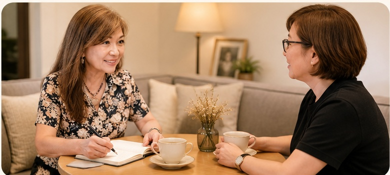
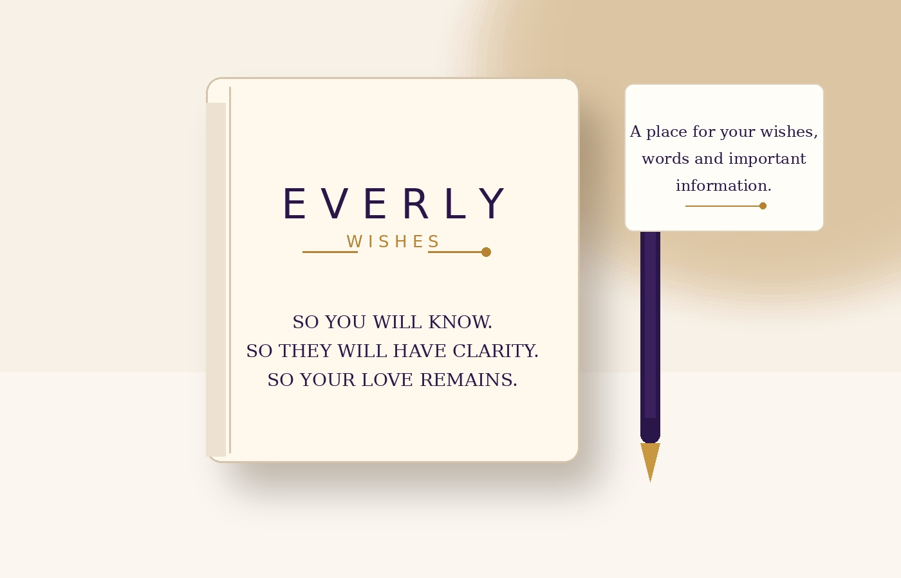
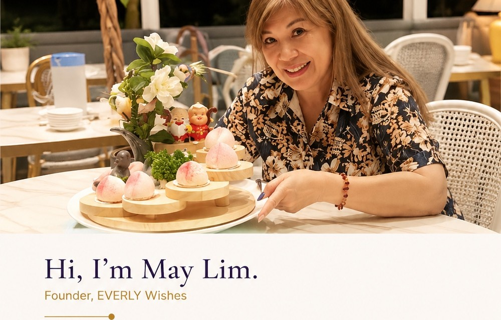

Personal
About you and what matters most.
EVERLY Wishes
EVERLY is a personal space to talk about the things that matter to you — your family, your wishes, your memories, and the words you may one day want to leave behind.
♥ You don’t have to know where to begin. We can begin together.
About you and what matters most.
Your conversation stays between us.
So your story and wishes are remembered with love.
Why EVERLY
There are things we carry quietly for years. Stories our children may never have heard. Wishes we have thought about but never written down. Words that are difficult to begin.
Sometimes we know these conversations are important, but we don’t know how to start them. EVERLY was created for that space — not to rush you into decisions, but to give you a safe, human place to begin talking.

How EVERLY begins
We start with a complimentary first conversation, about 45 minutes.
A gentle chat. No pressure. No obligations.
If you feel comfortable and would like to continue, May will share how the deeper journey works.
Over time, your wishes, words, memories and important information are shaped with care and respect.
When you’re ready, they can become your EVERLY Wishes Book.

Your EVERLY Wishes Book
Your EVERLY Wishes Book is a place for your story, your wishes, your memories, and the things that matter most.
It becomes a meaningful gift for the people you love.
A legacy of your heart.
Learn About the Wishes BookWhen you are ready
Over the course of our conversations, there may be things you want to put into words and keep in one place.
The people who matter to you, the stories you want remembered, and the moments that shaped you.
Words you may want loved ones to understand, remember, or one day hold close.
Practical details you do not want your family to have to guess or search for.
The Wishes Book is a personal record. It is not a will, legal document, financial plan, medical directive or funeral contract.

Meet May
Founder, EVERLY Wishes
“We can start with a conversation.”
EVERLY comes from a simple belief: sometimes people don’t need another form, another checklist or another instruction.
They need someone who will sit with them. Someone who will listen without rushing them. Someone they can gradually come to trust.
I am not here to tell you what your wishes should be. I am here to listen, ask gentle questions, help you explore what matters, and — when you are ready — help you put those thoughts together.
Questions
No. The first conversation is simply a chance to get to know each other. You do not need to arrive with a completed list of wishes.
That’s completely okay. Trust cannot be forced. You decide what you want to share and when.
Not necessarily. EVERLY is relationship-led. Some conversations may take time, and there is no need to rush the process.
The EVERLY Wishes Book is intended to bring together the things you have chosen to record and preserve. The final form depends on what you choose to share.
EVERLY is not intended to be a one-size-fits-all, one-session service. After the first conversation, May can explain the next steps and the investment involved before any deeper work begins.
No. EVERLY is not a funeral service or funeral package. It is a personal conversation and wishes guidance service.
No. Where something requires professional legal, financial, insurance or medical advice, you should seek the appropriate qualified professional.
You can start with an EVERLY Conversation. There is no pressure to prepare perfect answers.
Begin gently
Sometimes the first step is simply sitting down with someone you feel comfortable talking to.